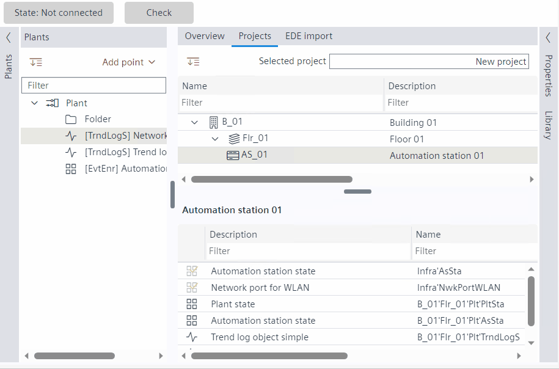

创建事件注册对象 - 植物导航视图
里面有3个选项可以选择Plants用于添加事件注册对象的导航视图。
- Go to Engineering > BACnet references.
- There are three options available in the Plants navigation view to add a trend log object. Go to the Plants navigation view:
- Click Add data point and from the drop down select Add event enrollment.
OR - Select the Plant, right-click and select Add data point > Add event enrollment.
OR - Select the Folder under the Plant, right-click and select Add data point > Add event enrollment.
- The Add event enrollment dialog box displays.
- Enter the details in the required fields and click OK.

- The event enrollment object is created in the Plants navigation view.
可以编辑以下属性：
- Description
- Name
- Reference device instance
- Reference object type
- Reference object instance